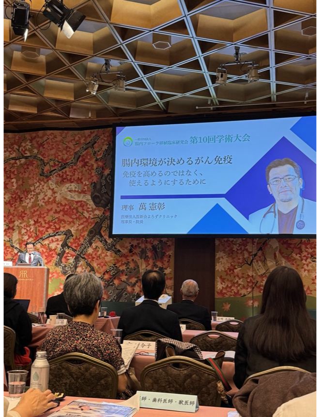

肠道菌群会影响癌症免疫治疗吗？

LINK HEALTH 团队摄影为什么同样使用免疫药，有些患者的肿瘤会缩小，有些患者却反应有限？日本医生万宪彰在第10届肠道菌群移植临床研究会学术大会上提出，肠道环境可能影响免疫细胞在肿瘤周围发挥作用。他关注的是，改变肠道菌群，能否帮助部分患者从免疫治疗中获得更多益处。
《自然·医学》二期试验
2026年发表的FMT-LUMINate二期试验，观察了两组患者在开始一线免疫治疗前接受菌群移植后的结果。20位经过筛选的晚期非小细胞肺癌患者中，16位达到部分缓解。另一组20位黑色素瘤患者采用不同的免疫用药组合，15位达到客观缓解。两组数字来自各自的联合方案。试验缺少同期单药对照，菌群移植的额外获益仍需对照研究确认。
《科学》早期临床研究
2021年发表的一项小型研究纳入既往对抗PD-1治疗无反应的晚期黑色素瘤患者。15位可评估患者在接受菌群移植并再次使用抗PD-1药物后，3位达到客观缓解，另有3位疾病稳定超过12个月。这项研究和上述二期试验对应不同的治疗阶段。
不同癌种、分期、既往治疗及联合方案之间不能直接外推缓解率。个人治疗决定应与负责诊疗的肿瘤专科医生讨论。
资料来源｜大会公开摘要；Duttagupta 等，《自然·医学》，2026年；Davar 等，《科学》，2021年。